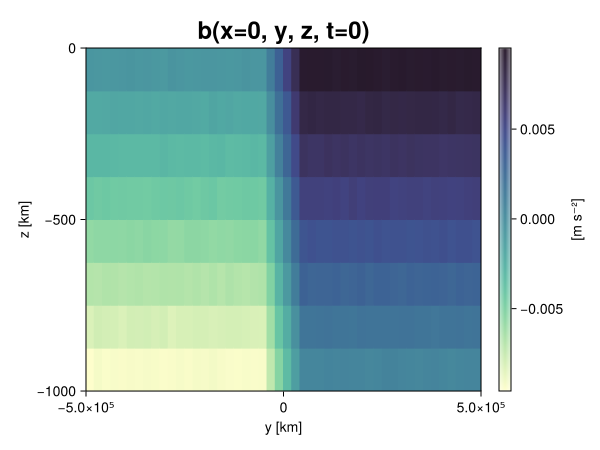
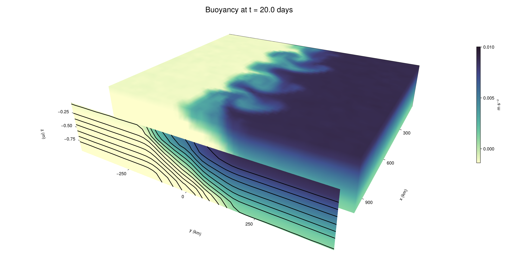

Baroclinic adjustment
In this example, we simulate the evolution and equilibration of a baroclinically unstable front.
Install dependencies
First let's make sure we have all required packages installed.
using Pkg
pkg"add Oceananigans, CairoMakie"using Oceananigans
using Oceananigans.UnitsGrid
We use a three-dimensional channel that is periodic in the x direction:
Lx = 1000kilometers # east-west extent [m]
Ly = 1000kilometers # north-south extent [m]
Lz = 1kilometers # depth [m]
grid = RectilinearGrid(size = (48, 48, 8),
x = (0, Lx),
y = (-Ly/2, Ly/2),
z = (-Lz, 0),
topology = (Periodic, Bounded, Bounded))48×48×8 RectilinearGrid{Float64, Periodic, Bounded, Bounded} on CPU with 3×3×3 halo
├── Periodic x ∈ [0.0, 1.0e6) regularly spaced with Δx=20833.3
├── Bounded y ∈ [-500000.0, 500000.0] regularly spaced with Δy=20833.3
└── Bounded z ∈ [-1000.0, 0.0] regularly spaced with Δz=125.0Model
We built a HydrostaticFreeSurfaceModel with an ImplicitFreeSurface solver. Regarding Coriolis, we use a beta-plane centered at 45° South.
model = HydrostaticFreeSurfaceModel(; grid,
coriolis = BetaPlane(latitude = -45),
buoyancy = BuoyancyTracer(),
tracers = :b,
momentum_advection = WENO(),
tracer_advection = WENO())HydrostaticFreeSurfaceModel{CPU, RectilinearGrid}(time = 0 seconds, iteration = 0)
├── grid: 48×48×8 RectilinearGrid{Float64, Periodic, Bounded, Bounded} on CPU with 3×3×3 halo
├── timestepper: QuasiAdamsBashforth2TimeStepper
├── tracers: b
├── closure: Nothing
├── buoyancy: BuoyancyTracer with ĝ = NegativeZDirection()
├── free surface: ImplicitFreeSurface with gravitational acceleration 9.80665 m s⁻²
│ └── solver: FFTImplicitFreeSurfaceSolver
├── advection scheme:
│ ├── momentum: WENO reconstruction order 5
│ └── b: WENO reconstruction order 5
└── coriolis: BetaPlane{Float64}We start our simulation from rest with a baroclinically unstable buoyancy distribution. We use ramp(y, Δy), defined below, to specify a front with width Δy and horizontal buoyancy gradient M². We impose the front on top of a vertical buoyancy gradient N² and a bit of noise.
"""
ramp(y, Δy)
Linear ramp from 0 to 1 between -Δy/2 and +Δy/2.
For example:
```
y < -Δy/2 => ramp = 0
-Δy/2 < y < -Δy/2 => ramp = y / Δy
y > Δy/2 => ramp = 1
```
"""
ramp(y, Δy) = min(max(0, y/Δy + 1/2), 1)
N² = 1e-5 # [s⁻²] buoyancy frequency / stratification
M² = 1e-7 # [s⁻²] horizontal buoyancy gradient
Δy = 100kilometers # width of the region of the front
Δb = Δy * M² # buoyancy jump associated with the front
ϵb = 1e-2 * Δb # noise amplitude
bᵢ(x, y, z) = N² * z + Δb * ramp(y, Δy) + ϵb * randn()
set!(model, b=bᵢ)Let's visualize the initial buoyancy distribution.
using CairoMakie
# Build coordinates with units of kilometers
x, y, z = 1e-3 .* nodes(grid, (Center(), Center(), Center()))
b = model.tracers.b
fig, ax, hm = heatmap(view(b, 1, :, :),
colormap = :deep,
axis = (xlabel = "y [km]",
ylabel = "z [km]",
title = "b(x=0, y, z, t=0)",
titlesize = 24))
Colorbar(fig[1, 2], hm, label = "[m s⁻²]")
fig
Simulation
Now let's build a Simulation.
simulation = Simulation(model, Δt=20minutes, stop_time=20days)Simulation of HydrostaticFreeSurfaceModel{CPU, RectilinearGrid}(time = 0 seconds, iteration = 0)
├── Next time step: 20 minutes
├── Elapsed wall time: 0 seconds
├── Wall time per iteration: NaN days
├── Stop time: 20 days
├── Stop iteration : Inf
├── Wall time limit: Inf
├── Callbacks: OrderedDict with 4 entries:
│ ├── stop_time_exceeded => Callback of stop_time_exceeded on IterationInterval(1)
│ ├── stop_iteration_exceeded => Callback of stop_iteration_exceeded on IterationInterval(1)
│ ├── wall_time_limit_exceeded => Callback of wall_time_limit_exceeded on IterationInterval(1)
│ └── nan_checker => Callback of NaNChecker for u on IterationInterval(100)
├── Output writers: OrderedDict with no entries
└── Diagnostics: OrderedDict with no entriesWe add a TimeStepWizard callback to adapt the simulation's time-step,
conjure_time_step_wizard!(simulation, IterationInterval(20), cfl=0.2, max_Δt=20minutes)Also, we add a callback to print a message about how the simulation is going,
using Printf
wall_clock = Ref(time_ns())
function print_progress(sim)
u, v, w = model.velocities
progress = 100 * (time(sim) / sim.stop_time)
elapsed = (time_ns() - wall_clock[]) / 1e9
@printf("[%05.2f%%] i: %d, t: %s, wall time: %s, max(u): (%6.3e, %6.3e, %6.3e) m/s, next Δt: %s\n",
progress, iteration(sim), prettytime(sim), prettytime(elapsed),
maximum(abs, u), maximum(abs, v), maximum(abs, w), prettytime(sim.Δt))
wall_clock[] = time_ns()
return nothing
end
add_callback!(simulation, print_progress, IterationInterval(100))Diagnostics/Output
Here, we save the buoyancy, $b$, at the edges of our domain as well as the zonal ($x$) average of buoyancy.
u, v, w = model.velocities
ζ = ∂x(v) - ∂y(u)
B = Average(b, dims=1)
U = Average(u, dims=1)
V = Average(v, dims=1)
filename = "baroclinic_adjustment"
save_fields_interval = 0.5day
slicers = (east = (grid.Nx, :, :),
north = (:, grid.Ny, :),
bottom = (:, :, 1),
top = (:, :, grid.Nz))
for side in keys(slicers)
indices = slicers[side]
simulation.output_writers[side] = JLD2OutputWriter(model, (; b, ζ);
filename = filename * "_$(side)_slice",
schedule = TimeInterval(save_fields_interval),
overwrite_existing = true,
indices)
end
simulation.output_writers[:zonal] = JLD2OutputWriter(model, (; b=B, u=U, v=V);
filename = filename * "_zonal_average",
schedule = TimeInterval(save_fields_interval),
overwrite_existing = true)JLD2OutputWriter scheduled on TimeInterval(12 hours):
├── filepath: baroclinic_adjustment_zonal_average.jld2
├── 3 outputs: (b, u, v)
├── array type: Array{Float64}
├── including: [:grid, :coriolis, :buoyancy, :closure]
├── file_splitting: NoFileSplitting
└── file size: 31.6 KiBNow we're ready to run.
@info "Running the simulation..."
run!(simulation)
@info "Simulation completed in " * prettytime(simulation.run_wall_time)[ Info: Running the simulation...
[ Info: Initializing simulation...
[00.00%] i: 0, t: 0 seconds, wall time: 43.591 seconds, max(u): (0.000e+00, 0.000e+00, 0.000e+00) m/s, next Δt: 20 minutes
[ Info: ... simulation initialization complete (39.791 seconds)
[ Info: Executing initial time step...
[ Info: ... initial time step complete (25.151 seconds).
[06.94%] i: 100, t: 1.389 days, wall time: 49.889 seconds, max(u): (1.238e-01, 1.194e-01, 1.597e-03) m/s, next Δt: 20 minutes
[13.89%] i: 200, t: 2.778 days, wall time: 1.176 seconds, max(u): (2.184e-01, 1.765e-01, 1.773e-03) m/s, next Δt: 20 minutes
[20.83%] i: 300, t: 4.167 days, wall time: 1.169 seconds, max(u): (2.944e-01, 2.300e-01, 1.808e-03) m/s, next Δt: 20 minutes
[27.78%] i: 400, t: 5.556 days, wall time: 1.012 seconds, max(u): (3.637e-01, 3.355e-01, 1.885e-03) m/s, next Δt: 20 minutes
[34.72%] i: 500, t: 6.944 days, wall time: 968.167 ms, max(u): (4.520e-01, 5.123e-01, 1.959e-03) m/s, next Δt: 20 minutes
[41.67%] i: 600, t: 8.333 days, wall time: 1.054 seconds, max(u): (5.943e-01, 8.149e-01, 2.740e-03) m/s, next Δt: 20 minutes
[48.61%] i: 700, t: 9.722 days, wall time: 1.074 seconds, max(u): (8.604e-01, 1.082e+00, 3.097e-03) m/s, next Δt: 20 minutes
[55.56%] i: 800, t: 11.111 days, wall time: 1.078 seconds, max(u): (1.342e+00, 1.139e+00, 4.623e-03) m/s, next Δt: 20 minutes
[62.50%] i: 900, t: 12.500 days, wall time: 977.998 ms, max(u): (1.454e+00, 1.009e+00, 4.830e-03) m/s, next Δt: 20 minutes
[69.44%] i: 1000, t: 13.889 days, wall time: 1.033 seconds, max(u): (1.371e+00, 8.429e-01, 2.728e-03) m/s, next Δt: 20 minutes
[76.39%] i: 1100, t: 15.278 days, wall time: 1.012 seconds, max(u): (1.252e+00, 8.996e-01, 2.484e-03) m/s, next Δt: 20 minutes
[83.33%] i: 1200, t: 16.667 days, wall time: 1.023 seconds, max(u): (1.208e+00, 8.754e-01, 2.497e-03) m/s, next Δt: 20 minutes
[90.28%] i: 1300, t: 18.056 days, wall time: 1.021 seconds, max(u): (1.245e+00, 9.994e-01, 2.429e-03) m/s, next Δt: 20 minutes
[97.22%] i: 1400, t: 19.444 days, wall time: 1.009 seconds, max(u): (1.257e+00, 1.046e+00, 2.897e-03) m/s, next Δt: 20 minutes
[ Info: Simulation is stopping after running for 1.400 minutes.
[ Info: Simulation time 20 days equals or exceeds stop time 20 days.
[ Info: Simulation completed in 1.400 minutes
Visualization
All that's left is to make a pretty movie. Actually, we make two visualizations here. First, we illustrate how to make a 3D visualization with Makie's Axis3 and Makie.surface. Then we make a movie in 2D. We use CairoMakie in this example, but note that using GLMakie is more convenient on a system with OpenGL, as figures will be displayed on the screen.
using CairoMakieThree-dimensional visualization
We load the saved buoyancy output on the top, north, and east surface as FieldTimeSerieses.
filename = "baroclinic_adjustment"
sides = keys(slicers)
slice_filenames = NamedTuple(side => filename * "_$(side)_slice.jld2" for side in sides)
b_timeserieses = (east = FieldTimeSeries(slice_filenames.east, "b"),
north = FieldTimeSeries(slice_filenames.north, "b"),
top = FieldTimeSeries(slice_filenames.top, "b"))
B_timeseries = FieldTimeSeries(filename * "_zonal_average.jld2", "b")
times = B_timeseries.times
grid = B_timeseries.grid48×48×8 RectilinearGrid{Float64, Periodic, Bounded, Bounded} on CPU with 3×3×3 halo
├── Periodic x ∈ [0.0, 1.0e6) regularly spaced with Δx=20833.3
├── Bounded y ∈ [-500000.0, 500000.0] regularly spaced with Δy=20833.3
└── Bounded z ∈ [-1000.0, 0.0] regularly spaced with Δz=125.0We build the coordinates. We rescale horizontal coordinates to kilometers.
xb, yb, zb = nodes(b_timeserieses.east)
xb = xb ./ 1e3 # convert m -> km
yb = yb ./ 1e3 # convert m -> km
Nx, Ny, Nz = size(grid)
x_xz = repeat(x, 1, Nz)
y_xz_north = y[end] * ones(Nx, Nz)
z_xz = repeat(reshape(z, 1, Nz), Nx, 1)
x_yz_east = x[end] * ones(Ny, Nz)
y_yz = repeat(y, 1, Nz)
z_yz = repeat(reshape(z, 1, Nz), grid.Ny, 1)
x_xy = x
y_xy = y
z_xy_top = z[end] * ones(grid.Nx, grid.Ny)Then we create a 3D axis. We use zonal_slice_displacement to control where the plot of the instantaneous zonal average flow is located.
fig = Figure(size = (1600, 800))
zonal_slice_displacement = 1.2
ax = Axis3(fig[2, 1],
aspect=(1, 1, 1/5),
xlabel = "x (km)",
ylabel = "y (km)",
zlabel = "z (m)",
xlabeloffset = 100,
ylabeloffset = 100,
zlabeloffset = 100,
limits = ((x[1], zonal_slice_displacement * x[end]), (y[1], y[end]), (z[1], z[end])),
elevation = 0.45,
azimuth = 6.8,
xspinesvisible = false,
zgridvisible = false,
protrusions = 40,
perspectiveness = 0.7)Axis3()We use data from the final savepoint for the 3D plot. Note that this plot can easily be animated by using Makie's Observable. To dive into Observables, check out Makie.jl's Documentation.
n = length(times)41Now let's make a 3D plot of the buoyancy and in front of it we'll use the zonally-averaged output to plot the instantaneous zonal-average of the buoyancy.
b_slices = (east = interior(b_timeserieses.east[n], 1, :, :),
north = interior(b_timeserieses.north[n], :, 1, :),
top = interior(b_timeserieses.top[n], :, :, 1))
# Zonally-averaged buoyancy
B = interior(B_timeseries[n], 1, :, :)
clims = 1.1 .* extrema(b_timeserieses.top[n][:])
kwargs = (colorrange=clims, colormap=:deep, shading=NoShading)
surface!(ax, x_yz_east, y_yz, z_yz; color = b_slices.east, kwargs...)
surface!(ax, x_xz, y_xz_north, z_xz; color = b_slices.north, kwargs...)
surface!(ax, x_xy, y_xy, z_xy_top; color = b_slices.top, kwargs...)
sf = surface!(ax, zonal_slice_displacement .* x_yz_east, y_yz, z_yz; color = B, kwargs...)
contour!(ax, y, z, B; transformation = (:yz, zonal_slice_displacement * x[end]),
levels = 15, linewidth = 2, color = :black)
Colorbar(fig[2, 2], sf, label = "m s⁻²", height = Relative(0.4), tellheight=false)
title = "Buoyancy at t = " * string(round(times[n] / day, digits=1)) * " days"
fig[1, 1:2] = Label(fig, title; fontsize = 24, tellwidth = false, padding = (0, 0, -120, 0))
rowgap!(fig.layout, 1, Relative(-0.2))
colgap!(fig.layout, 1, Relative(-0.1))
save("baroclinic_adjustment_3d.png", fig)
Two-dimensional movie
We make a 2D movie that shows buoyancy $b$ and vertical vorticity $ζ$ at the surface, as well as the zonally-averaged zonal and meridional velocities $U$ and $V$ in the $(y, z)$ plane. First we load the FieldTimeSeries and extract the additional coordinates we'll need for plotting
ζ_timeseries = FieldTimeSeries(slice_filenames.top, "ζ")
U_timeseries = FieldTimeSeries(filename * "_zonal_average.jld2", "u")
B_timeseries = FieldTimeSeries(filename * "_zonal_average.jld2", "b")
V_timeseries = FieldTimeSeries(filename * "_zonal_average.jld2", "v")
xζ, yζ, zζ = nodes(ζ_timeseries)
yv = ynodes(V_timeseries)
xζ = xζ ./ 1e3 # convert m -> km
yζ = yζ ./ 1e3 # convert m -> km
yv = yv ./ 1e3 # convert m -> km49-element Vector{Float64}:
-500.0
-479.1666666666667
-458.3333333333333
-437.5
-416.6666666666667
-395.8333333333333
-375.0
-354.1666666666667
-333.3333333333333
-312.5
-291.6666666666667
-270.8333333333333
-250.0
-229.16666666666666
-208.33333333333334
-187.5
-166.66666666666666
-145.83333333333334
-125.0
-104.16666666666667
-83.33333333333333
-62.5
-41.666666666666664
-20.833333333333332
0.0
20.833333333333332
41.666666666666664
62.5
83.33333333333333
104.16666666666667
125.0
145.83333333333334
166.66666666666666
187.5
208.33333333333334
229.16666666666666
250.0
270.8333333333333
291.6666666666667
312.5
333.3333333333333
354.1666666666667
375.0
395.8333333333333
416.6666666666667
437.5
458.3333333333333
479.1666666666667
500.0Next, we set up a plot with 4 panels. The top panels are large and square, while the bottom panels get a reduced aspect ratio through rowsize!.
set_theme!(Theme(fontsize=24))
fig = Figure(size=(1800, 1000))
axb = Axis(fig[1, 2], xlabel="x (km)", ylabel="y (km)", aspect=1)
axζ = Axis(fig[1, 3], xlabel="x (km)", ylabel="y (km)", aspect=1, yaxisposition=:right)
axu = Axis(fig[2, 2], xlabel="y (km)", ylabel="z (m)")
axv = Axis(fig[2, 3], xlabel="y (km)", ylabel="z (m)", yaxisposition=:right)
rowsize!(fig.layout, 2, Relative(0.3))To prepare a plot for animation, we index the timeseries with an Observable,
n = Observable(1)
b_top = @lift interior(b_timeserieses.top[$n], :, :, 1)
ζ_top = @lift interior(ζ_timeseries[$n], :, :, 1)
U = @lift interior(U_timeseries[$n], 1, :, :)
V = @lift interior(V_timeseries[$n], 1, :, :)
B = @lift interior(B_timeseries[$n], 1, :, :)Observable([-0.009395389598200294 -0.008131450125625809 -0.006855001511844198 -0.005635242019628884 -0.004383690878866437 -0.0031085513373788937 -0.0018867348872536021 -0.0006294269637655377; -0.00937667282649802 -0.008123806044440754 -0.006873647133929913 -0.005626583710775253 -0.004384413764643905 -0.0031095914375899327 -0.0018782079955765585 -0.0006098663541025527; -0.00935872570568594 -0.008148572336344037 -0.006866192760040107 -0.005626388453800329 -0.004376256516718519 -0.0031137868605231266 -0.0018886384597341706 -0.0006169954500962646; -0.009395151473256574 -0.008135960685779745 -0.006877226429467466 -0.0056201039701113354 -0.004370778384144813 -0.0031523668940003583 -0.0018916207869515422 -0.0006013507993136188; -0.009375744176572685 -0.008123978680142854 -0.006847618185410468 -0.005611833604211663 -0.004404538972023179 -0.00311818647126757 -0.0018563102347402543 -0.0006463374825642789; -0.009371068644314114 -0.008124445456691087 -0.006893533802807837 -0.0056272027854206595 -0.00439331502062065 -0.0031132474125788886 -0.0018913081398347711 -0.0006353917605888189; -0.009383817130837652 -0.00810500416556621 -0.006894410973714349 -0.005635609802368764 -0.004387569088366018 -0.0031307584370771865 -0.0018607158857817836 -0.0006116495543391122; -0.009370296669036991 -0.008132466220368305 -0.006896439028745195 -0.005607115509600677 -0.004373908586234652 -0.003140879565601686 -0.0018740567835789125 -0.0006346389694731599; -0.009372146000233996 -0.008135580623759181 -0.006911420037163974 -0.005614772642399231 -0.004362475237960242 -0.0031322518066537342 -0.0018910061255687054 -0.0006266373959181663; -0.009379610415942992 -0.008143703041832961 -0.0068901124600404895 -0.005633850248897595 -0.0043767497556316684 -0.0031253432574544003 -0.0018795625300623347 -0.000643763767126244; -0.009365063368215144 -0.008108779384191385 -0.006852644850733343 -0.0055962491902409464 -0.004372813621646912 -0.0031253360520258045 -0.0018662334374090874 -0.0006455734363677514; -0.009370693629636846 -0.008119912573249217 -0.0068646915872611555 -0.005641774020488945 -0.004388449276455843 -0.003159535918410266 -0.0018725978631258307 -0.0005996344137376004; -0.009387911417125935 -0.008109203071845835 -0.006887013878238251 -0.0056149273912141535 -0.004390481806200104 -0.003112377111340807 -0.0018712771904392212 -0.0006352842589931487; -0.009361273083922475 -0.008102098195884361 -0.0068745543069713465 -0.005626192211482084 -0.00436798231488478 -0.0031100762433551956 -0.0018800814679196256 -0.0006062206378291545; -0.009364875581876386 -0.008124609747148936 -0.006890413031668717 -0.005658875778359493 -0.004379386935506948 -0.003120024645989985 -0.0018766689406778624 -0.0006276391993926795; -0.009384344655224659 -0.008149888491923466 -0.006874631277046236 -0.005628570156654949 -0.004362075913365747 -0.0031221714334855877 -0.0018713287116295767 -0.0006181454360746108; -0.00938429956245763 -0.008130450139693421 -0.006859444329099185 -0.005607674874120044 -0.004379598160439024 -0.0031425584550784425 -0.001869222444067538 -0.0006215096521115927; -0.00939518505361818 -0.00811082414462686 -0.0068934294216763765 -0.005613699572663079 -0.004405540358530501 -0.003102051581743648 -0.0018460941833059734 -0.0006304192346122267; -0.009385596088487371 -0.00813064848268434 -0.00686322624836672 -0.005606115192461389 -0.004366861279384948 -0.0031410659171204336 -0.0018762281461687763 -0.0006058010062371632; -0.009418968816347144 -0.008131216183974777 -0.006876388720339056 -0.005628662467274249 -0.004385052781284547 -0.0031395034710957844 -0.0018685535894319967 -0.000638937100877724; -0.009384319837012505 -0.008130521846523983 -0.006870542270534105 -0.005626496130096355 -0.004377651380797809 -0.0031096896445476914 -0.0019018067411057805 -0.0006162972878817741; -0.009407652449327467 -0.008108093458000298 -0.006857337649409656 -0.005638191120713981 -0.0043809019481727595 -0.003153085661835437 -0.001882196936552491 -0.0006339411324480204; -0.0074745175579133604 -0.0062361156677914415 -0.0050332921342902395 -0.003750731483280961 -0.0025201545712551262 -0.001245121359140481 -1.0286810867403331e-5 0.0012708256693909523; -0.005442318131389931 -0.004173777493029758 -0.0029107562027678225 -0.0016668662308064873 -0.0004170746364670814 0.0008562807290553786 0.0020941011846367062 0.003325721374274238; -0.003335305396208047 -0.002082792322666736 -0.000834770149804215 0.0004438442925461636 0.001654775527901938 0.0029263582975971995 0.004170192389868151 0.00540823703603041; -0.0012468009549720259 1.1349371241331488e-6 0.0012729582592668355 0.002504845467708731 0.003756253354422969 0.004974647385952065 0.006251230509606221 0.007512530801335913; 0.0006302685614973679 0.001876235055057677 0.003129427450316437 0.004393540987016252 0.005634726127530194 0.006876989460878738 0.008093331624528279 0.009357004906952423; 0.000624925699241636 0.001872167537450731 0.0031096564738764365 0.004372144524801937 0.005611219715478404 0.006879141357992555 0.008118899655623233 0.009386358015431027; 0.0006297952344692532 0.0018814964828104373 0.003122443933681334 0.004377542384878538 0.005634134980476883 0.006883567802611954 0.008120925901832755 0.009337812915335385; 0.0006215763958228457 0.001884824290527348 0.003123386737029197 0.004365575188531386 0.005600005543615223 0.006878555913882229 0.008119673678850284 0.009379420039232323; 0.000607595836484069 0.0018810725868750955 0.0031395554885222505 0.004386631568548256 0.005602853700947649 0.006887203937377986 0.008128886339938355 0.00935254598842719; 0.0006346918392917941 0.0018918755053570074 0.0031325746574138243 0.004355958675323756 0.005632257767401697 0.006890609390201123 0.008125082967476343 0.009385458790037231; 0.0006075658610574563 0.0018686644384567786 0.0031232743482356453 0.00437992628548971 0.005628190339671983 0.006853384145828749 0.008101436347780181 0.009383556917782155; 0.0006314234560342139 0.0018636494718521392 0.003141216505395335 0.004378976037889121 0.005603290433090512 0.006889334540441297 0.008133290433081737 0.00938086954005638; 0.0006181079249305146 0.0018915598903600187 0.0031389875446862794 0.004383704730165213 0.0056182236925607235 0.006837483719030702 0.00813785024336879 0.009389772777811787; 0.0006250926840599064 0.0018857425952229754 0.0031519135071255526 0.004387784979203516 0.005644218757146567 0.006890195893125037 0.00812984985086576 0.00939077974204733; 0.0006412104210827817 0.0018856232559798713 0.003134217822439816 0.004402316112406946 0.005637645910926597 0.006867073324047919 0.00812216947527228 0.009368181854691654; 0.0006208965560804526 0.0018643794200433295 0.0031305332366266202 0.0043763047348277006 0.005608896120182889 0.00687784925817439 0.008097103050520658 0.009380305819702525; 0.0006427177189392198 0.0018907361650775053 0.003147134897533377 0.004361245555488031 0.005630657368322534 0.0069128707118764066 0.008097002349635807 0.00937816079446361; 0.0006200638335910513 0.0018721332291956841 0.0031309402126257946 0.004368925092301507 0.005634480082794346 0.006869820334688091 0.008120183676144038 0.0093787966164815; 0.0006224157906358985 0.001849617282706148 0.0031131104129000797 0.004353461051379939 0.005607586061434827 0.006878578628802444 0.008135957052285432 0.009385479570537937; 0.0006488793699370454 0.0018569517614788445 0.0031321756368043077 0.004377155110030359 0.0056297790586485414 0.006881552579485774 0.008101480835542713 0.009382382909578341; 0.0006221542481854147 0.0018509919221265459 0.0031370844499201737 0.004368739961575121 0.005634891490475135 0.006863847834564955 0.008139773310228336 0.00938158346704082; 0.0006254554476301313 0.0018910265136942016 0.0031289132995721996 0.004379216179534747 0.005630439126059951 0.006833210760813041 0.008123246758070017 0.009376792206935575; 0.0006261646575834172 0.001879896903998482 0.003127667488434233 0.004383205468807772 0.005617194582617425 0.006884018456820844 0.00813727508300325 0.009382245517326845; 0.0006058615362112533 0.001876409718196008 0.0031324781854628024 0.004374157208134391 0.005619157611634464 0.00688853182589753 0.008125744976965861 0.009360610970878841; 0.0006167088282387262 0.0018745984256643014 0.0031193717866271884 0.004335942422417491 0.005640069502620384 0.00685267671604635 0.00809988680006883 0.00937705266636298; 0.0006131717393994458 0.0018709957493684224 0.003131114269281199 0.004358811083345653 0.005599338320644573 0.006907800661709293 0.008136526594029145 0.009358336446909898])
and then build our plot:
hm = heatmap!(axb, xb, yb, b_top, colorrange=(0, Δb), colormap=:thermal)
Colorbar(fig[1, 1], hm, flipaxis=false, label="Surface b(x, y) (m s⁻²)")
hm = heatmap!(axζ, xζ, yζ, ζ_top, colorrange=(-5e-5, 5e-5), colormap=:balance)
Colorbar(fig[1, 4], hm, label="Surface ζ(x, y) (s⁻¹)")
hm = heatmap!(axu, yb, zb, U; colorrange=(-5e-1, 5e-1), colormap=:balance)
Colorbar(fig[2, 1], hm, flipaxis=false, label="Zonally-averaged U(y, z) (m s⁻¹)")
contour!(axu, yb, zb, B; levels=15, color=:black)
hm = heatmap!(axv, yv, zb, V; colorrange=(-1e-1, 1e-1), colormap=:balance)
Colorbar(fig[2, 4], hm, label="Zonally-averaged V(y, z) (m s⁻¹)")
contour!(axv, yb, zb, B; levels=15, color=:black)Finally, we're ready to record the movie.
frames = 1:length(times)
record(fig, filename * ".mp4", frames, framerate=8) do i
n[] = i
endThis page was generated using Literate.jl.